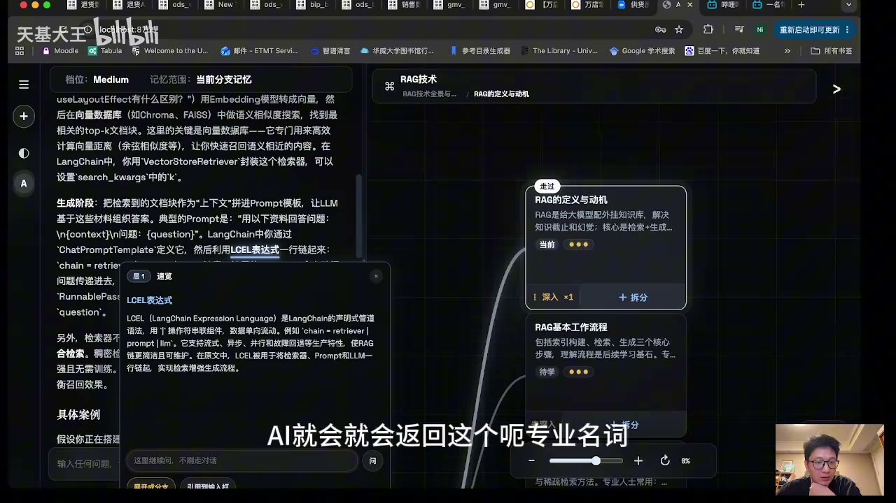

原视频 · 在线回看
点击后联网加载 B 站播放器；本地不下载整段视频。

原视频 · 在线回看
点击后联网加载 B 站播放器；本地不下载整段视频。
来源：我是如何用 ai 高效学习跟调研陌生领域的？｜UP 主：天基大王｜时长：11 分 22 秒｜打开视频｜阅读强度：深度
用 AI 学一个陌生领域时，常会遇到一种很细碎的困难。刚刚读懂几句话，里面又出现一个不熟悉的名词；追问这个名词，回答里再冒出两个新的名词。几轮以后，聊天越来越长，最初的问题已经被推到很上面。我们确实一直在学习，却开始不确定现在学到哪里，刚才为什么会走到这个问题，接下来又该回到哪一段。
天基大王制作的学习系统，主要想减少这种来回寻找和选择的负担。它把讲解放在左边，把知识地图放在右边。地图显示正在学习的主题及其分支，局部解释则允许我们暂时钻进一个陌生概念，理解后再返回原来的段落。学习的内容仍然需要自己理解，但“接下来去哪里”“刚才那段在哪里”有了可见的支持。
这套系统从学习目的开始。例子里的目标是了解 RAG，并将它用于改进知识管理系统：除了辅助学习，还希望以后能够更快找到已经学习过的知识。RAG 是检索增强生成，可以先理解为，回答问题之前先从资料中寻找相关内容，再让模型结合找到的材料组织回答。对于一个保存了很多学习记录的系统，这条思路与“以后怎样找回内容”有直接关系。
不过，“学习 RAG”仍然太宽。只想了解它能解决什么问题，与准备自己实现一个可用系统，所需内容和深度不同。所以系统会先问要学什么、目的是什么，再通过问卷了解已有基础和希望深入的程度。回答这些问题，相当于给接下来的讲解提供起点和终点：哪些东西可以从已有知识接过去，哪些步骤必须从基础解释。
比如，已经使用过 LangChain 的人，可能对用程序串接模型与工具有一定经验；只听过 RAG 名字的人，则需要先看清资料、检索和回答之间的关系。问卷不必把人准确划进某个固定等级，它的作用是避免所有人一上来都收到同样庞大的目录。学习目的越具体，知识地图才越容易围绕眼前的问题组织。
确认目标和基础以后，系统先提出几张主知识卡片。用户可以查看这些主题是否需要学习，确认后再让系统细分。于是，一个大主题逐渐展开成几个相互连接的部分。界面中可以看到“RAG 的定义与动机”“RAG 基本工作流程”等卡片：前者解释为什么需要它，后者帮助理解它怎样运行。每张卡片对应一个可以继续进入的学习问题。
这种安排比一段很长的目录多了一层持续定位的作用。读着左侧讲解时，右侧仍然能看到当前主题位于哪里。暂时深入某个小问题，也不必靠记忆保存全部上级关系。等小问题解决后，可以回到上一级继续阅读。地图因此承担了一部分原本需要读者在脑中维持的上下文。
知识地图也需要允许修改。AI 根据目标生成的拆分，是一种学习安排，不能保证它已经包含所有必要前提，更不能保证顺序对每个人都合适。真正读起来之后，才可能发现某个基础需要提前补，或者某个分支与眼前目标关系不大。地图清楚地呈现出来，正好方便发现这些问题，并逐渐调整学习范围。
选择一个知识点以后，系统会把该卡片的内容、预先设计的讲解要求和相应对话背景送给 AI。左侧开始解释这个主题，右侧仍保留当前位置。例如进入“RAG 的定义与动机”，就可以从为什么要接入外部资料开始，再逐渐走到检索与生成的关系。读者不需要每次自己重新描述整个学习计划。
系统还接入了 AnySearch，用于查找相关材料。搜索的作用，是给讲解提供可以继续阅读的信息来源；材料是否适合当前技术问题，仍需看来源本身和实际内容。某段回答附带论文或报告，并不会自动保证每一句解释都正确。尤其在学习技术时，文档里的具体定义与实现条件，仍然需要与正在讨论的问题对应。
天基大王希望讲解能够利用已有对话背景，所以为系统设计了较长的提示要求，也接受了较慢的响应。这反映了一种产品选择：与其每次都只按当前卡片标题泛泛介绍，他更希望讲解接得上自己的学习目标。不过，提示更长并不自动带来更好答案；实际是否连贯，仍要看学习时收到的具体内容。
局部划词解释，是这套系统很重要的交互。阅读一段说明时，选中不懂的词，就在附近打开一个小窗口，解释它在当前语境中的含义。主对话不必因此继续往下滚出很多轮。我们可以保留正在读的段落，暂时把注意力转向这个词，理解后再接回原句。
画面中的 LCEL 表达式就是一个例子。它出现在 LangChain 如何把若干处理步骤连接起来的说明里。读者若不知道这个词，可以直接在当前段落旁查阅，而不需要另开一个完全失去背景的聊天。局部解释还支持继续追问：如果解释里又出现陌生概念，就在这一层继续深入。这样，补基础与阅读主问题可以交替进行。
这种交互解决的是一个很实际的注意力问题。普通聊天也能回答这些追问，但追问越多，最初的段落离当前页面越远。我们需要一边理解新概念，一边记住自己为何来问它。把支线留在局部窗口里之后，返回的路径变得明显，读者能够把更多精力用在关系本身，而少花一些精力恢复阅读位置。
天基大王把一段话中不再有陌生知识点，作为自己判断这一段已经理解的重要信号。这个信号对阅读很有用：至少不会再被某个词卡住。不过，“每个词都看懂”与“能够独立解释整段关系”还有距离。读懂局部解释之后，仍然需要看这些部分怎样共同回答原来的问题；涉及操作的知识，还要通过实际使用理解细节。系统可以帮助解除卡点，理解本身不会被一个完成标记替代。
学完一个节点以后，地图还承担回访入口的作用。点击卡片上的“深入”等入口，可以定位到左侧对应的对话。假如几天后再次需要理解 RAG 的检索过程，我们可以先在图中找到那个主题，再回到当时展开的解释。这样，学习记录不只按聊天发生的时间排列，也可以按知识主题进入。
这个功能与划词解释互相配合。划词解释帮助我们在阅读当下不丢失位置，卡片定位帮助我们在后续使用时找回位置。前一个问题发生在一段讲解内部，后一个问题发生在整个学习记录里。两种导航处理了不同尺度的迷路，因而不必把所有需求都交给聊天列表中的滚动与搜索。
学习地图长出来以后，还有一个决定需要作出：什么时候继续拆，按照什么角度拆。以“RAG 基本工作流程”为例，我们可以按步骤理解，先问资料怎样进入系统，再问怎样找到相关内容，最后问怎样组织回答。也可以按典型场景理解，分别看知识问答、报告摘要、代码库查询等任务里，检索和生成怎样配合。两个拆法都围绕 RAG，却在回答不同问题。
天基大王此前自己画思维导图时，经常需要停下来决定采用哪一种拆分方式。为减少这部分负担，他让系统提供拆分角度，用户选定后，再由 AI 扩展对应的子节点。已有节点不必只按唯一方式展开；某个主题足够重要时，还可以再从另一个角度继续看。
| 拆分角度 | 它帮助我们理解什么 | 适合在怎样的问题下使用 |
|---|---|---|
| 按工作步骤 | 从输入到结果经过哪些操作。 | 想把整个过程顺着走一遍。 |
| 按典型场景 | 同一种方法怎样用于不同任务。 | 想知道它与自己的需求有什么关系。 |
| 按核心组件 | 哪些部件分别承担什么职责。 | 想进一步理解系统由什么组成。 |
| 按技术路线 | 同一个环节有哪些不同做法。 | 已经理解基本过程，准备比较选择。 |
这里不需要马上掌握全部分支。每增加一个视角，都应帮助当前问题变得更清楚。如果现在只是想知道知识问答如何使用自己的文档，先沿着这个场景往下读就有意义；等需要理解系统怎样实现，再转向核心组件。不同视角可以共存，但每一次学习依然可以有一条明确的路径。
这也说明，知识树的大小不等于理解的深度。系统能够快速生成许多卡片，读者却仍然需要时间把其中的关系接起来。生成节点减少了整理负担，不能替代阅读和思考。地图最有用的时候，是让我们看得见自己在解决哪个问题，并且知道已经理解的部分与尚未理解的部分怎样相连。
系统最后还有一个卡片检索入口。输入关键词以后，AI 根据各张卡片的简要摘要寻找相关内容，再返回相应卡片。这里搜索的对象是已经组织过的学习记录。对于积累较多主题的人，仅靠记住它位于哪一棵树、哪一层分支会越来越困难，检索就为地图补上了另一条进入路径。
这套安排可以串成一个完整过程：先根据目标建立初步地图，进入一个节点阅读，遇到陌生词时局部追问，必要时继续拆分，之后再通过卡片或关键词找回。AI 帮助组织材料、建议下一步，也帮助定位过去内容；学习者仍然负责感受哪里没懂、判断解释是否成立，以及是否还需要深入。把这些环节放在一起，学习过程就更容易保持连续。
学习目标和已有基础决定地图应展开到哪里。先说明要学什么、为什么学，能够减少泛泛目录带来的负担。
左侧讲解、右侧地图和局部划词解释分别处理阅读、定位与补基础。它们共同帮助读者深入一个问题之后，仍然找得到返回的路径。
同一主题可以按步骤、场景、组件或技术路线拆分。选择当前需要的角度，比一次展开最多节点更有帮助；学过的内容还可以通过卡片检索再次进入。
为什么同样是学习 RAG，准备理解概念的人和准备实现系统的人，需要不同的地图？
局部划词解释与卡片定位，各自帮助解决哪一种“找不到原来位置”的困难？
如果一棵知识树已经非常大，你怎样判断接下来值得进入的是哪一个分支？